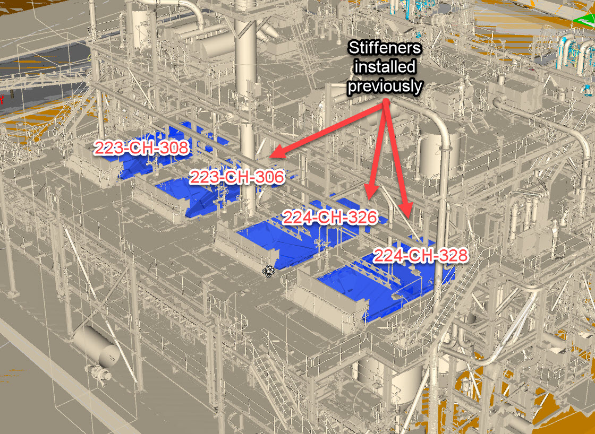

Site Overview
Select Equipment
Summary
How to Use CracTrac
Working Offline: On your mobile device or desktop, use the app to navigate the general site overview (GA), select an equipment piece, and then tap on the equipment drawing to add a crack. A circle will appear at the location you tapped, and you can add photos, notes, and a severity rating.
Exporting Data: Once you’ve completed your field work, click the "Export Data" button on the dashboard. A ZIP file containing your crack data (in JSON format) will download to your device.
Importing Data: On your desktop, open the app, then use the "Import Data" button to load the exported JSON file. The app will update with all your previously recorded cracks. Equipment with no data will show zero cracks in the summary.